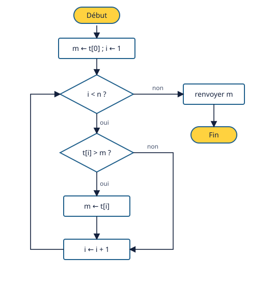
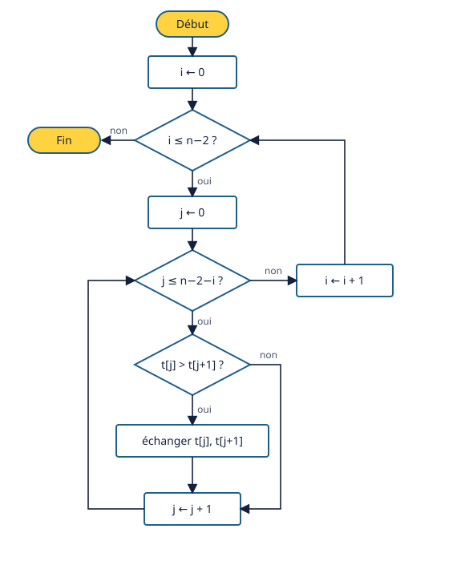
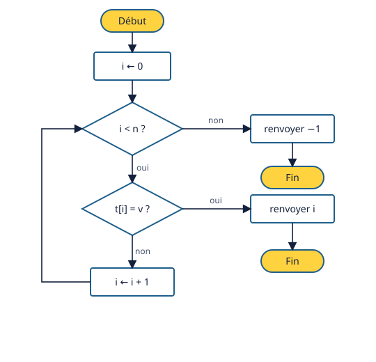

Algorithmique : 3 algorithmes
Algorithme 1 : Recherche du maximum
Idée générale
Garder en mémoire le plus grand élément vu jusqu'ici.
Pseudo-code
m ← t[0]
pour chaque x dans t:
si x > m alors m ← x
renvoyer mExemple pas à pas
Tableau [5, 2, 9, 1] : m=5 → 2 ne change rien → 9 > 5 donc m=9 → 1 ne change rien. Résultat : 9.
En Python
Fonction maximum dans algos.py.
Algorithme 2 : Tri à bulles
Idée générale
Comparer les voisins et les échanger s'ils sont dans le mauvais ordre, jusqu'à ce que tout soit trié.
Pseudo-code
pour i de 0 à n-2:
pour j de 0 à n-2-i:
si t[j] > t[j+1] alors échanger t[j], t[j+1]Exemple pas à pas
[5, 2, 9, 1] : passe 1 → [2, 5, 1, 9] (le 9 est en place). Passe 2 → [2, 1, 5, 9]. Passe 3 → [1, 2, 5, 9].
En Python
Fonction tri_bulles dans algos.py.
Algorithme 3 : Recherche dans un tableau
Idée générale
Parcourir le tableau jusqu'à trouver la valeur.
Pseudo-code
pour i de 0 à n-1:
si t[i] = v alors renvoyer i
renvoyer -1Exemple pas à pas
Chercher 9 dans [5, 2, 9, 1] : t[0]=5 non, t[1]=2 non, t[2]=9 oui → position 2.
En Python
Fonction recherche dans algos.py.
Sortie de algos.py
Maximum : 9
Tri : [1, 2, 5, 9]
Position de 9 : 2
Organigrammes



![Terminal : algos.py affiche Maximum 9, Tri [1, 2, 5, 9] et Position de 9 : 2.](../medias/captures/python-algos.png)